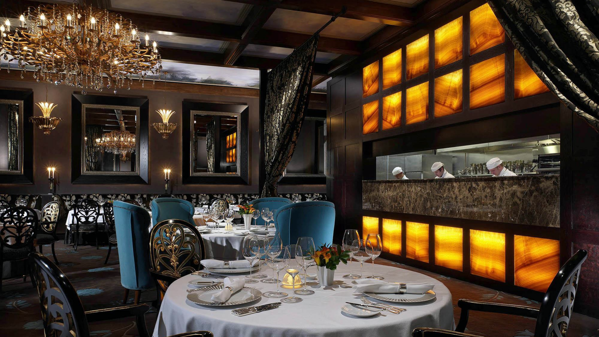

Reserve here!

|
sheepLeFrio |
lamb Meat |
lamb Roast |
soup |
salad |
lamb chops |
| calories |
345 |
450 |
780 |
230 |
320 |
410 |
| fat |
7 grams |
8 grams |
4 grams |
8 grams |
4 grams |
6 grams |
| protein |
54grams |
76grams |
43grams |
65grams |
65grams |
79grams |
| Grade |
A |
C |
B |
A |
C |
B |
Not only is Lamb meat a rich source of high-quality protein,
but it is also an outstanding source of many vitamins and minerals, including iron, zinc,
and vitamin B12. Because of this, regular consumption of lamb may promote muscle growth,
maintenance, and performance. In addition, it helps prevent anemia.
© Copyright 2019 The Sheep's head NYC
always the tastiest...
Call ahead for reservations.... 212-334-4773
open daily from 4pm- midnight
& weekends 5pm - midnight